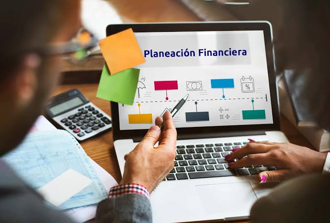
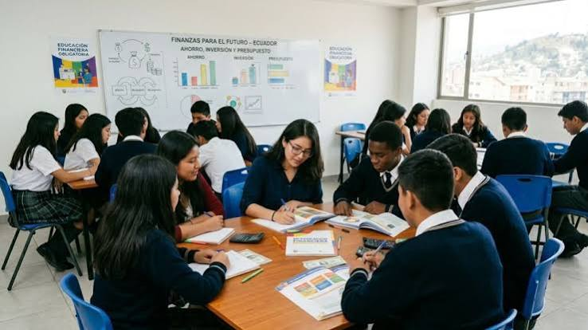
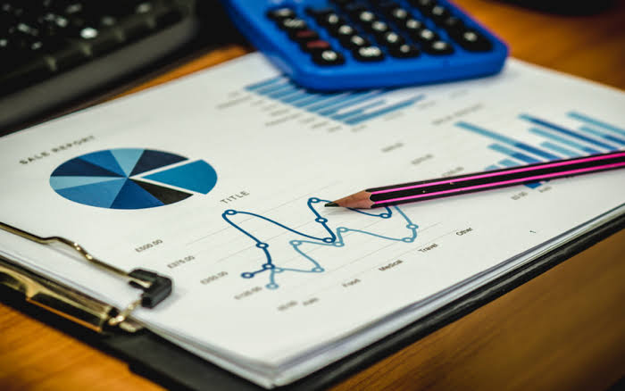
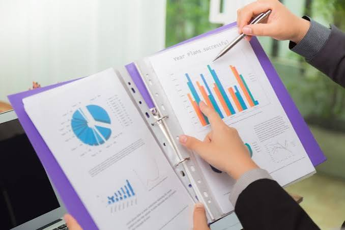
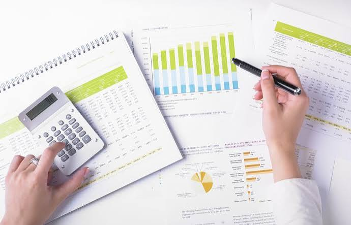
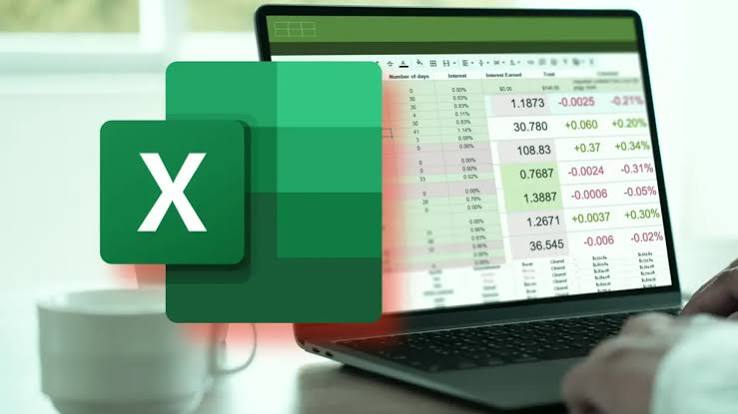

Contabilidad
Permite registrar y organizar los movimientos económicos, como los ingresos, los gastos y otras operaciones, para mantener información clara y ordenada.
La Gestión Financiera permite comprender cómo se administran los recursos económicos, cómo se organiza la información contable y cómo se toman decisiones para utilizar el dinero de manera responsable. A través de esta especialidad, los estudiantes desarrollan conocimientos que pueden aplicar en situaciones cotidianas, proyectos y actividades administrativas.
📚 Explorar las materiasLa Gestión Financiera es el área que estudia cómo organizar, registrar, controlar y analizar los recursos económicos. Su propósito es ayudar a comprender de dónde proviene el dinero, en qué se utiliza y cómo se pueden tomar decisiones para aprovecharlo mejor. Esta área se relaciona con la contabilidad, la planificación de presupuestos y el análisis de información financiera, herramientas importantes para administrar los recursos de una persona, una institución o un negocio.
Permite registrar y organizar los movimientos económicos, como los ingresos, los gastos y otras operaciones, para mantener información clara y ordenada.

Consiste en establecer objetivos económicos y distribuir los recursos disponibles para cubrir necesidades y cumplir metas.
Ayuda a interpretar datos económicos, comparar resultados e identificar situaciones que requieren una mejor organización de los recursos.
La Gestión Financiera no se limita a las empresas o las instituciones. También está presente en las decisiones que tomamos diariamente. Aprender a organizar el dinero, comparar opciones y planificar gastos ayuda a utilizar los recursos de forma consciente y responsable.
Identificar cuánto dinero se necesita para materiales, transporte y otras necesidades escolares, procurando distribuirlo adecuadamente.
Revisar diferentes alternativas antes de comprar para elegir una opción que se ajuste al presupuesto disponible.
Reservar una parte de los recursos disponibles para una meta futura, estableciendo una cantidad y revisando periódicamente el progreso del ahorro.

Calcular los materiales y gastos necesarios para una actividad escolar y comprobar si el dinero disponible es suficiente.
Analizar una situación financiera significa estudiar la información económica disponible para comprender un problema, comparar alternativas y elegir una solución razonable. Este proceso requiere orden, observación y revisión de los resultados.
Determinar cuánto dinero se tiene y cuáles son los recursos disponibles.
Organizar las cantidades que entran y salen para conocer cómo se utiliza el dinero.
Distribuir los recursos entre las necesidades y establecer prioridades.
Revisar si los gastos se mantienen dentro del presupuesto y detectar diferencias.
Proponer ajustes y comprobar si las decisiones ayudan a alcanzar el objetivo.
Un grupo de estudiantes tiene $50 para una actividad escolar. Calcula los costos, compara precios y reserva una parte para imprevistos. Así organiza la actividad sin superar los recursos disponibles.
Durante la formación, los estudiantes pueden desarrollar conocimientos relacionados con el registro contable, la elaboración de presupuestos, el análisis de información económica y el uso de herramientas para organizar datos. Estos aprendizajes permiten comprender mejor cómo se administran los recursos.
Registrar y clasificar operaciones económicas para mantener datos claros, ordenados y fáciles de consultar.
Calcular los recursos necesarios, distribuir los gastos y comparar las cantidades planificadas con los resultados.
Emplear hojas de cálculo y herramientas digitales para organizar datos y realizar cálculos financieros.
Leer información económica, reconocer diferencias entre cantidades y comprender los resultados.
Calcular costos, comparar alternativas y reconocer cómo influyen los gastos en una actividad.
Utilizar los datos disponibles para evaluar opciones y justificar decisiones financieras.
Aprender también significa colaborar, practicar y resolver problemas.
El plan de estudios de Gestión Financiera combina asignaturas técnicas y generales que brindan los conocimientos necesarios para comprender, analizar y administrar los recursos económicos, además de fortalecer tu formación académica.

Tu formación,
tu mejor inversión. ✨
Asignaturas enfocadas en tu formación contable, financiera y administrativa.
Introduce los principios de la contabilidad y la administración de los recursos económicos de una organización. Permite aprender a registrar operaciones, organizar información financiera y comprender los ingresos, gastos y resultados de una empresa.

Enseña a revisar y analizar la información económica de una empresa para conocer su situación financiera. Ayuda a identificar posibles problemas, controlar los recursos y apoyar la toma de decisiones.

Explica cómo elaborar presupuestos para organizar los ingresos y gastos de una organización. Permite establecer objetivos económicos, distribuir los recursos disponibles y comparar los resultados reales con lo planificado.
Introduce las normas y obligaciones relacionadas con los tributos y el cumplimiento fiscal. Ayuda a comprender la importancia de las declaraciones, los comprobantes y las responsabilidades tributarias de las personas y las empresas.

Desarrolla habilidades para utilizar programas y recursos digitales en actividades administrativas y empresariales. Incluye el manejo de documentos, hojas de cálculo, organización de datos y elaboración de informes para facilitar el trabajo y mejorar la productividad.
Enseña vocabulario y expresiones en inglés relacionadas con las actividades comerciales y empresariales. Permite comprender términos de negocios, interpretar documentos sencillos y mejorar la comunicación en contextos profesionales.
Desarrolla la capacidad de identificar oportunidades y convertir ideas en proyectos de negocio. Trabaja la planificación, la creatividad, el análisis de costos, la organización y la toma de decisiones para crear propuestas viables.
Permite aplicar conocimientos adquiridos en actividades prácticas, ejercicios y situaciones simuladas. Favorece el aprendizaje mediante la experiencia, la resolución de problemas y el desarrollo de habilidades relacionadas con la formación académica.
Los ejercicios prácticos permiten relacionar los conceptos estudiados con situaciones concretas. A través de casos, presupuestos y registros ficticios, los estudiantes pueden practicar cómo organizar información, resolver problemas y justificar decisiones.
Elaborar un presupuesto ficticio, clasificar los gastos por prioridad y distribuir el dinero sin superar la cantidad disponible.
Clasificar operaciones ficticias y registrar los movimientos económicos de forma ordenada para facilitar su consulta.
Interpretar una tabla de ingresos y gastos, comparar cantidades y explicar las conclusiones obtenidas.
Calcular los costos iniciales de un proyecto ficticio y estimar los recursos necesarios para comenzar.
La práctica ayuda a convertir los conocimientos en habilidades que puedes seguir desarrollando.
Para comprender cómo se administran los recursos económicos, es importante conocer algunos conceptos básicos. Estas ideas ayudan a interpretar situaciones cotidianas, organizar el dinero y entender mejor la información financiera.
Son las cantidades de dinero que recibe una persona, familia, institución o negocio. Identificarlos permite conocer con qué recursos se cuenta para cubrir las necesidades y planificar actividades.
Son los pagos o desembolsos que se realizan para cubrir necesidades, adquirir productos o desarrollar actividades. Registrarlos ayuda a saber en qué se utilizan los recursos.
Consiste en reservar una parte de los recursos disponibles para utilizarlos posteriormente. Puede ayudar a prepararse para una meta o un gasto previsto.
Es una planificación de los ingresos y gastos previstos durante un período o para una actividad. Permite distribuir los recursos, establecer prioridades y comparar lo planeado con lo que realmente se gastó.
Estos conceptos se relacionan entre sí. Cuando se conocen los ingresos, se registran los gastos y se establece un presupuesto, resulta más fácil planificar el ahorro y tomar decisiones informadas sobre el uso de los recursos.
Gestionar información económica no consiste únicamente en realizar cálculos. También implica actuar con honestidad, cuidar los datos y presentar información clara. Estos principios contribuyen a generar confianza en el entorno académico, administrativo y empresarial.
Registrar las operaciones de forma correcta y evitar alterar cantidades o presentar información engañosa.
Organizar la información para que los movimientos económicos puedan revisarse y comprenderse con claridad.
Proteger los datos personales y económicos, evitando compartir información con personas no autorizadas.
Revisar los cálculos, cumplir las tareas asignadas y reconocer la importancia de cada decisión financiera.
Una información bien organizada es útil cuando se presenta con veracidad y se utiliza de manera responsable. Por eso, la ética es una parte importante del aprendizaje financiero.
Los conocimientos de Gestión Financiera pueden servir como punto de partida para explorar distintas opciones de estudio. La elección dependerá de tus intereses, de los requisitos de cada institución y de la formación que decidas continuar.
Puedes investigar carreras técnicas o universitarias relacionadas con la administración, la contabilidad y el análisis económico.
Revisa los planes de estudio, las modalidades y los requisitos de ingreso de cada institución.
Con formación adicional y la experiencia necesaria, podrás prepararte para realizar actividades relacionadas con diferentes áreas administrativas.
Las funciones que puedas desempeñar dependerán de tu preparación, experiencia y de los requisitos del puesto.
Explorar opciones, investigar carreras y reconocer tus intereses te ayudará a tomar decisiones más informadas sobre tu futuro académico y profesional.
Cada estudiante tiene diferentes intereses y fortalezas. Esta especialidad puede llamar tu atención si te gusta trabajar con números, organizar información, planificar actividades y comprender cómo se utilizan los recursos económicos.
No necesitas dominar todos estos temas antes de comenzar. La formación académica te permite desarrollar conocimientos y habilidades progresivamente mediante el estudio y la práctica.
🧭 Realizar test vocacionalAntes de elegir una especialidad, es normal tener preguntas sobre sus contenidos, sus exigencias académicas y las opciones que ofrece para continuar estudiando. Aquí encontrarás respuestas breves a algunas dudas comunes.
No necesariamente. Es importante contar con bases matemáticas y estar dispuesto a practicar operaciones, cálculos y análisis de cantidades.
La contabilidad se centra en registrar y organizar operaciones económicas; la gestión financiera utiliza información de este tipo para planificar y evaluar el uso de los recursos. Ambas áreas están relacionadas.
Sí. Las hojas de cálculo y otras herramientas digitales pueden ayudar a registrar datos, realizar cálculos y organizar información, según las actividades y los recursos disponibles.
Sí. Puedes explorar carreras relacionadas con Contabilidad, Finanzas, Economía y Administración, verificando los requisitos de cada institución.
Piensa en tus intereses, las asignaturas que disfrutas, el tipo de actividades que te gustaría aprender y las opciones académicas que deseas explorar después del bachillerato.
Cada especialidad ofrece diferentes enfoques de aprendizaje. Conocer sus características puede ayudarte a comparar opciones e identificar cuál se relaciona mejor con tus intereses y objetivos académicos.

Explora la programación, el diseño de páginas web y la creación de soluciones digitales para diferentes necesidades.
Conocer Desarrollo de Software
Ofrece una formación orientada al conocimiento científico, el razonamiento y la comprensión de fenómenos naturales.
Conocer Ciencias